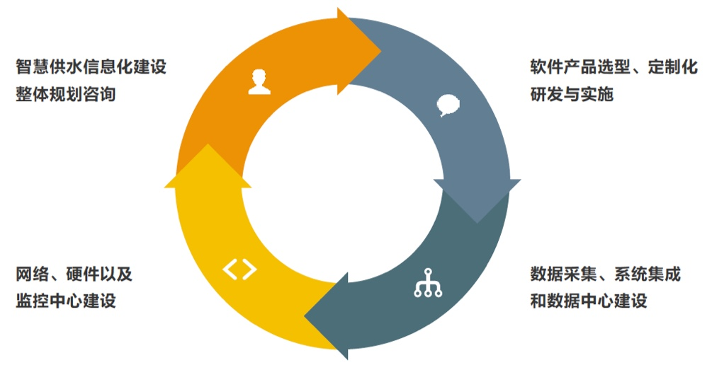
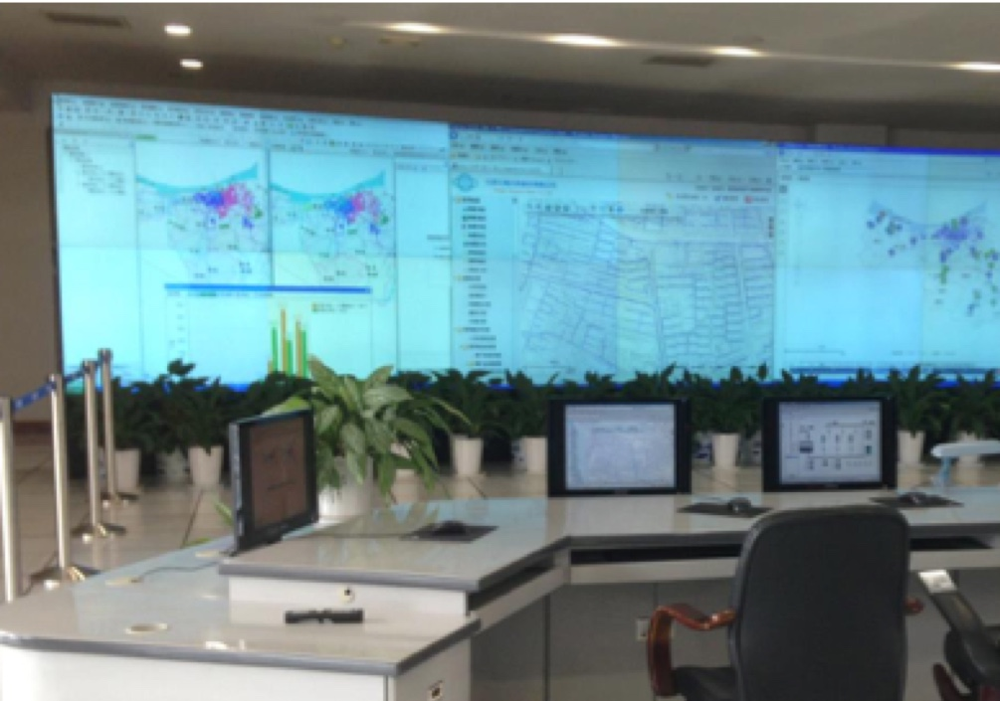
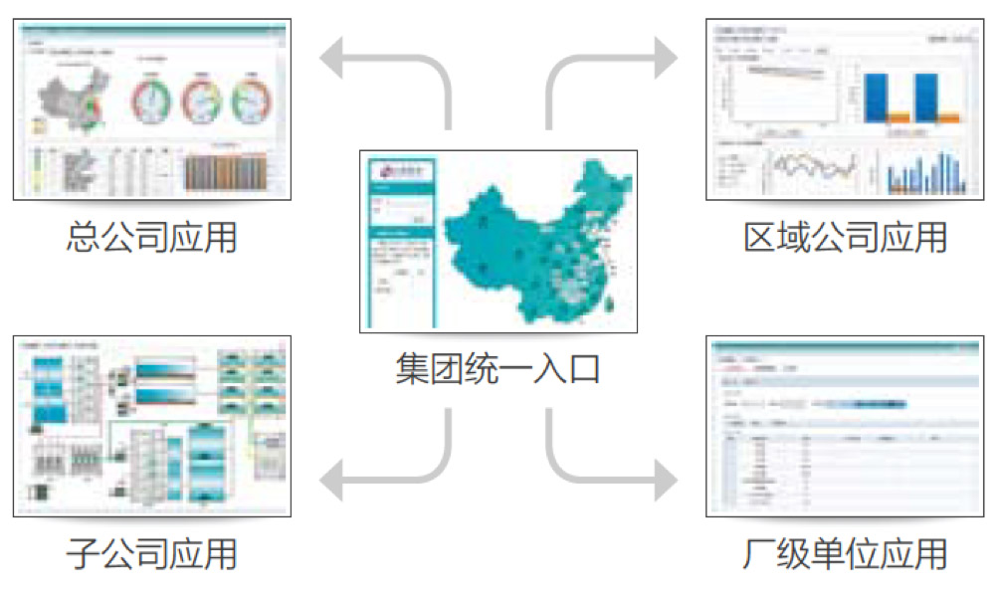
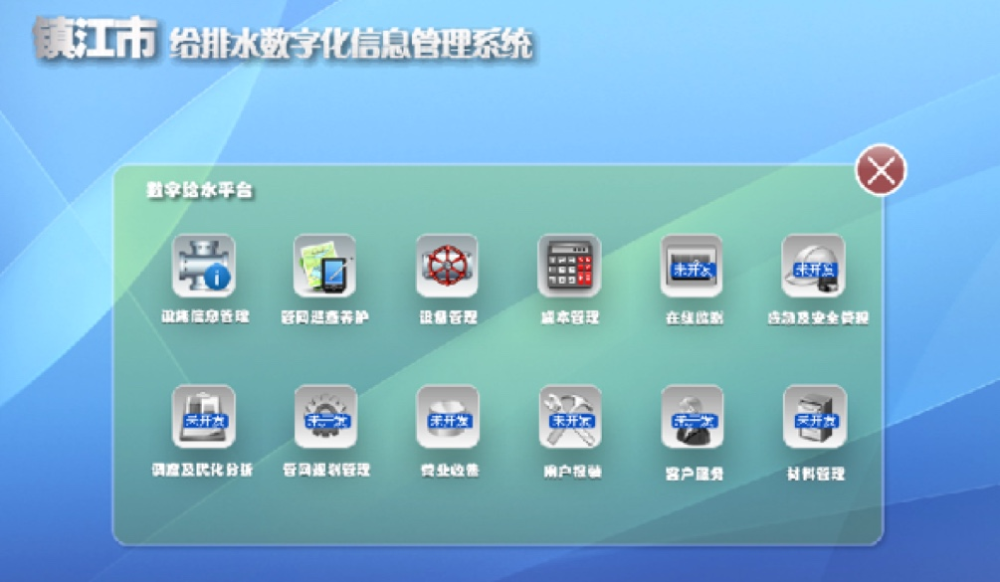
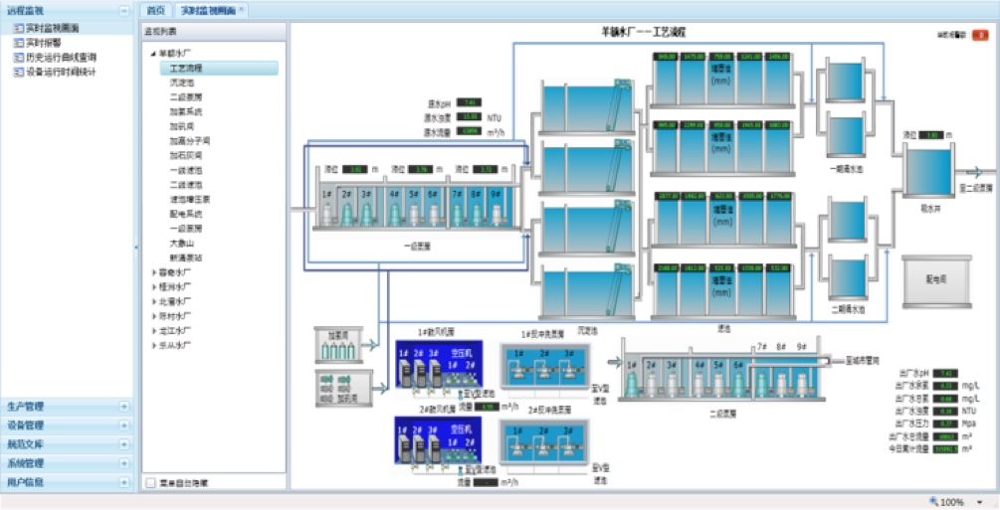
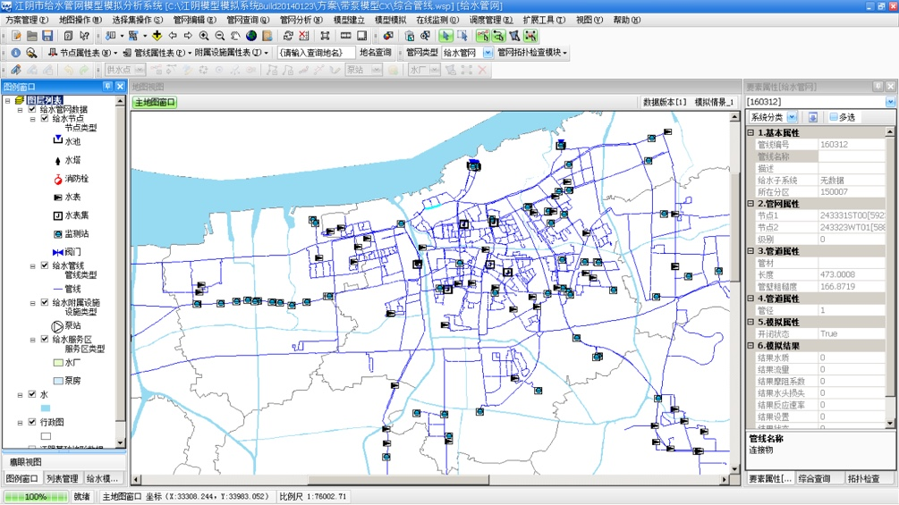
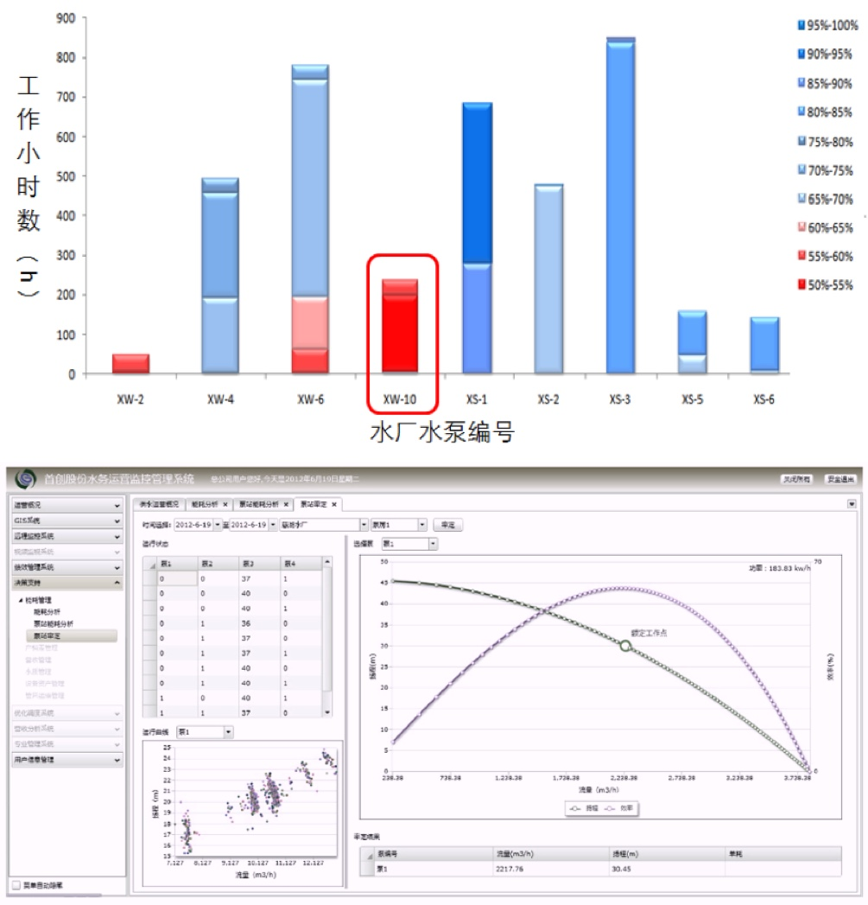
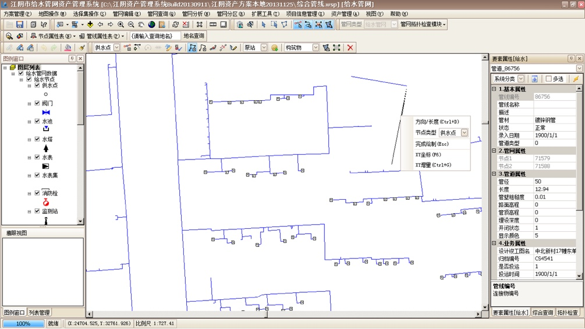

-
Planning & construction of digital water supply system
智慧供水规划与建设针对客户对智慧供水的建设需求，提供从整体规划咨询、可行性研究、软件产品选型、软件实施与定制化开发、数据采集与数据中心建设、系统集成、网络与硬件工程到监控中心工程建设等全套智慧供水信息化建设解决方案，为用户提供国内顶尖的、一站式智慧供水建设服务。
服务内容
特色与优势
● 专注于智慧水务行业，深刻洞察行业核心价值、管理模式与技术发展趋势
● 提供从整体规划、软件实施到硬件和系统集成的一整套智慧供水解决方案
● 和客户构建合作伙伴关系，提供科技力量支持以及长期增值服务
经典案例
-
江阴市智能水务整体规划和建设项目
项目背景：该项目为住建部立项课题，也是公司上市募投方向之一。经过4年的规划和建设在2013年底住建部项目验收评审中获得国内领先水平的认定。
该项目内容：我院承担了智能水务整体规划和项目实施工作，实现了江阴市给水系统的在线模拟、智能调度、巡查养护、客户服务和资产管理等智能服务功能，并在水务物联网资产管理、管网在线模型、基于大数据的水泵真实参数识别等三项技术方面取得了突破。
 -
首创股份运营监控管理系统建设规划
项目背景：从水务集团运营管控优化的角度出发，以增强首创股份水务运营管控能力、提升绩效表现、降低成本和增加利润为目标，为首创股份增强运营能力的战略目标提供有力支撑。
该项目内容：从业务优化和管理优化两方面的规划措施入手，制定出一套理念先进、实用性强的首创运营监控管理系统（COMC）的建设方案。
 -
顺德生产运营管理系统建设项目
项目背景：顺德水司拥有10座水厂，为顺德市提供120万吨/日的供水服务，随着供水规模的扩大和水质要求的提升，顺德水务迫切需要提升综合生产管理能力，保障生产安全、降低能耗。
该项目内容：实现了对水厂的关键工艺环节的数据采集和远程监控，建立了一套标准化的从监控数据到小时、日、月序列的生产数据的管理体系，有效的降低了数据共享的成本，提高了生产数据对日常管理的支撑价值。
特色与优势
● 清源华衍智慧水务信息系统建设规划
● 苏州工业园区GIS系统建设项目
● 智慧芜湖水务信息规划
● 怀化GIS和在线监测系统建设项目
-
······
Online simulation & analysis of water supply networks
供水管网在线模拟分析服务帮助客户搭建具有国际先进水平的在线式给水管网模型，并进行专业的参数率定以及多情景验证，确保用户获得实用、准确和易维护的给水管网在线模型。在建模完成后，还可基于模型为客户提供管网问题诊断、现状评估、在线监测方案设计等后续模拟分析服务。
服务内容
● 管网拓扑检查与纠错、管网结构简化与模型构建
● 在线模型构建与维护用户培训
● 监测数据的集成、水量模式测定与动态分配模式的构建
● 给水管网运行现状评估与分析诊断
● 管网参数校核、模型验证
● 基于优化算法的在线监测方案设计服务
特色与优势
● 国际领先的在线模型构建理念和方法
● 清华大学专业技术力量
● 大量细致而全面的模型验证工作，保证模型精度经受住各种特殊工况的考验
-
江阴市智能水务整体规划和建设项目
项目背景：该项目为住建部立项课题，也是公司上市募投方向之一。经过4年的规划和建设在2013年底住建部项目验收评审中获得国内领先水平的认定。
该项目内容：我院承担了智能水务整体规划和项目实施工作，实现了江阴市给水系统的在线模拟、智能调度、巡查养护、客户服务和资产管理等智能服务功能，并在水务物联网资产管理、管网在线模型、基于大数据的水泵真实参数识别等三项技术方面取得了突破。

经典案例
-
江阴市给水管网在线模型建立
项目目标：针对江阴市城区1000余公里的给水管网建立在线模型，覆盖日供水量达到90万吨。得益于在线模型精度高、易维护的优点，该模型已经广泛应用于规划设计、科学调度、工程改造等方面，实现了智慧和科学的给水运行管理。
项目内容：项目将企业大用户在线监测、营销系统客户数据、水厂监测等数据与模型进行了无缝挂接，并利用水量动态分配、GIS数据整合和参数自动率定这三项核心功能，使模型能在线地进行模拟运算和动态分析。

其他成功案例
● 镇江给水管网在线模型建设
● 昌平区给水管网模型建设
-
······
Pump efficiency evaluation based on data
基于大数据的水泵效能评估“水泵效能评估”是清控环境自主开发的专利技术，该技术基于智能算法并利用常规水厂监测数据精确分析单台水泵的真实运行效率，无需额外监测设备投资，就可使公司管理者在办公室中随时掌控集团每一台水泵的运行情况和能效高低，洞察每一立方水的生产成本，从而帮助公司制定更加科学合理的技术改造方案，最终降低能耗、提高效益。
服务内容
● 数据的收集、筛选与清洗
● 水泵技术改造效果评估
● 水泵真实特性曲线的识别
● 水泵效能分析诊断系统的建设
● 水泵效能评估与改造方案编制
特色与优势
● 突破传统的水厂整体能耗评估限制，采用专有的数据挖掘技术精确分析每一台水泵的实际运行效率。
● 完全基于水厂历史运行数据，免去了繁琐的现场测试工作，不受现场安装条件的限制、不对生产过程造成任何影响、无需任何额外监测设备投资。
● 构建的信息系统让管理者在办公室中随时监控每一台水泵的能耗情况，从而做出更加及时、准确的决策。
经典案例
-
江阴市水厂水泵效率评估
项目目标：针江阴市XW水厂原二泵房运行效率较低，改造使千方水电耗成功降低12%，并且在1年内收回投资成本，取得良好的经济效益。
项目内容：采用水泵效能评估技术对主要的9台水泵进行了效率评估，识别出其中10号泵的实际运行效率最低，并依据该结果进行了技术改造。

Analysis and research of water supply networks
供水管网专题分析与研究服务通过构建可靠的供水管网专题模型，帮助客户在管网规划、建设、运营、改造等全生命周期管理过程中进行科学分析评估，精确定位问题并制定科学的解决方案与改进措施。
服务内容
● 供水管网现状模型构建与运行诊断评估
● 优化调度模型构建与多水源联合调度研究
● 供水管网规划模型构建与规划方案评估
● 在线监测优化布点方案制定与监测方案实施
● 爆管、水厂停机等重大应急事故专题分析与评估
● 水源水质模型分析与供水管网水质模型研究
● 区域计量与压力控制方案制定
特色与优势
● 清华大学专业技术团队
● 产学研结合的丰富实践经验以及对前沿供水模型技术的深度研究与理解
● 标准化的建模流程、精细化的建模过程、严谨的模型验证工作
经典案例
-
金昌市供水管网专项规划编制与模拟分析项目
项目目标：金昌市供水管网存在供水量不足、地下管线摸不 清、管网建设缺乏科学依据等问题，亟需编制供水专项规划 指导供水管网建设，借助供水管网模型对管网规划方案进行 评估分析，为供水市政专项规划的制定提供科学理据。
项目内容：我院承担金昌市市政专项规划工作，基于最新测绘数据构建现状管网专题模型，诊断发现测绘数据中多处错误及问题管线，并提出具体解决方案，使问题得到有效解决；基于规划方案搭建管网规划专题模型，通过模型评估提出优化建议，制定更加科学的规划方案。

其他成功案例
● 江阴供水管网专题模拟分析研究
● 江阴市供水管网监测点优化布置方案
● 镇江市优化布点方案编制
-
······